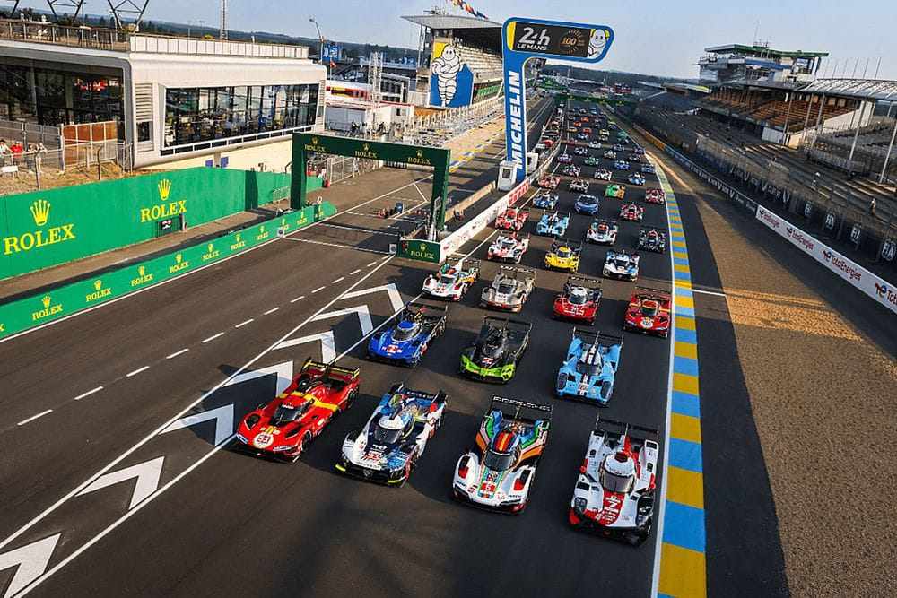

La carrera de Le Mans, una de las competiciones automovilísticas más icónicas del mundo, se celebra anualmente en el Circuito de la Sarthe, en Le Mans, Francia. Desde su inicio en 1923, ha sido una prueba de resistencia que desafía a pilotos y máquinas a completar la mayor cantidad de vueltas en 24 horas. La carrera se divide en varias categorías, incluyendo prototipos y gran turismos, con equipos de renombre compitiendo por la victoria y la gloria en el mundo del automovilismo. La historia de Le Mans está llena de momentos emocionantes, desde batallas épicas en pista hasta innovaciones tecnológicas que han cambiado la industria del automóvil. La habilidad de los pilotos para mantener un ritmo rápido durante largos periodos, combinada con la fiabilidad mecánica de los vehículos, es fundamental para alcanzar el éxito en esta exigente prueba de resistencia. Para los amantes del automovilismo, Le Mans representa la máxima expresión de la pasión, la destreza y la determinación en el mundo de las carreras de autos.uien también me cuidaba cuando me enfermaba y son los únicos recuerdos que tengo con ella

VIDEO DE CHALLENGER DEMON 170